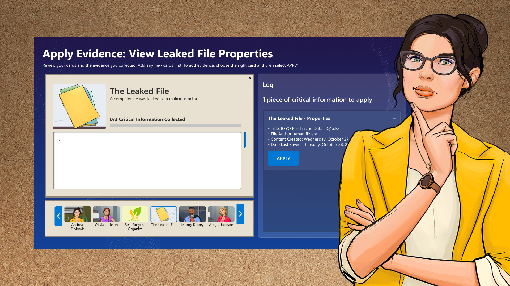

Learning cybersecurity
by solving a mystery.
A story-driven cybersecurity simulation that turns technical training into a collaborative investigation.

The challenge
Help IT professionals practice security skills in a risk-free environment. Who Hacked? uses a narrative investigation to connect technical exercises with the decisions a player makes.
My contribution
I designed page patterns and a style guide, mapped interactive flows, and built a demo prototype connecting more than 60 screens. The prototype connected the individual screens into a coherent experience for review.
Working across disciplines
I collaborated with project managers, an art director, game and learning experience designers, and developers. The project required the interface, learning content, and investigation narrative to work together.
Explore the complete process and original artifacts in the original case study ↗.
Back to selected work ↗